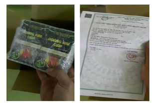
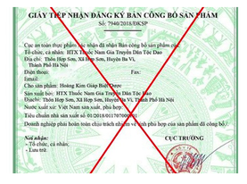
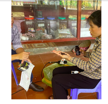

CHIÊU TRÒ GIẢ MẠO THUỐC HOÀNG KIM GIÁP
Sau một thời gian tạm lắng do chính sách siết chặt thông tin quảng cáo từ cơ quan chức năng, gần đây các mạng xã
hội, đặc biệt trang YouTube xuất hiện trở lại dày đặc quảng cáo các loại thực phẩm chức năng, thuốc chữa bệnh
mạn tính, nan y “ba đời chữa khỏi…”, tiềm ẩn nhiều hiểm họa cho người nhẹ dạ, cả tin.
Phóng viên đã vào cuộc xác minh và phát hiện đường dây lừa đảo, "bẫy" người bệnh rất bài bản khi mua phải thuốc
dỏm với giá cắt cổ. Nguy hiểm hơn, các loại thuốc này uống vào không có tác dụng, trái lại có người phải nhập
viện cấp cứu.
“Lấy danh xưng giả để “thổi bùng” giá thuốc”
Trong vai người bệnh u tuyến giáp, chúng tôi liên lạc với đơn vị Hoàng Kim Giáp để hỏi tìm mua loại thuốc mà
được quảng cáo rằng “bệnh nặng tới đâu cũng khỏi” này đồng thời điều ta cách thức buôn bán sản phẩm của họ. Dù
đã lấy lý do nhà nghèo không đủ tiền nhưng người tự xưng là bác sĩ của Bệnh viện đa khoa Y học cổ truyền vẫn nài
ép người bệnh phải mua ít nhất 2 hộp thuốc Hoàng Kim Giáp với giá 1,6 triệu đồng. Tuy nhiên việc mua bán chỉ
thực hiện qua hình thức giao hàng tận tay người bệnh chứ không hề có địa chỉ đến mua trực tiếp.

Bên trong gói hàng, ngoài 2 hộp thuốc Hoàng Kim Giáp còn có bản sao giấy tiếp nhận đăng ký bản công bố sản phẩm
do Cục An toàn thực phẩm cấp. Thế nhưng, sản phẩm này là thuốc, không phải thực phẩm chức năng thì bắt buộc phải
được Bộ Y tế thẩm định qua một quy trình hết sức nghiêm ngặt mới được cấp phép lưu hành trên thị trường. Cục An
toàn thực phẩm hoàn toàn không có chức năng cấp số công bố cho loại thuốc biệt dược này.
“Ngang nhiên làm giả giấy tờ để bán hàng”
Để làm rõ tính minh bạch và chính xác của các loại giấy tờ mà đơn vị kinh doanh Hoàng Kim Giáp đã cung cấp.
Phóng viên đã phối hợp với Cục An toàn thực phẩm tra cứu trên hệ thống hồ sơ dịch vụ công trực tuyến thì điều
tra ra: số công bố in trên bản đăng ký của sản phẩm Hoàng Kim Giáp đã được cấp cho một sản phẩm khác từ năm
2018. Mọi thông tin trên giấy tiếp nhận đăng ký bản công bố sản phẩm thuốc Hoàng Kim Giáp đều là giả mạo.

Ông Lê Hoàng - Trưởng phòng Quản lý sản phẩm thực phẩm - Cục An toàn thực phẩm cho biết: "Cục An toàn thực phẩm
khẳng định không cấp giấy tiếp nhận đăng ký bản công bố sản phẩm cho sản phẩm Hoàng Kim Giáp biệt dược. Sau khi
nhận được thông tin này, Cục An toàn thực phẩm đã đăng cảnh báo trên trang thông tin điện tử của Cục, cảnh báo
người tiêu dùng không mua, không sử dụng sản phẩm có tên Hoàng Kim Giáp".
“Thay tên đổi họ”
Để tìm hiểu kĩ hơn và công dụng cũng như nguồn gốc của sản phẩm được coi là “cứ chữa là khỏi” này. Chúng tôi đã
tìm đến đơn vị sản xuất được in trên giấy công bố tiếp nhận sản phẩm của Hoàng Kim Giáp để làm rõ. Qua đó, đơn
vị Hợp tác xã Thuốc nam gia truyền dân tộc Dao khẳng định không hề sản xuất loại thuốc nào như vậy, số điện
thoại được in lên trên bao bì sản phẩm cũng không phải của HTX.

Chị Trần Thị Hiền - Đại diện Hợp tác xã thuốc nam gia truyền dân tộc Dao - xã Hợp Sơn - Ba Vì - Hà Nội cho
biết: "Họ lấy địa chỉ của chúng tôi như thế này đã làm ảnh hưởng đến uy tín của hợp tác xã. Ở đây chúng tôi làm
rất thật, sản phẩm là thật, chứ cái sản phẩm này là không phải".
Hiện, Phòng Thanh tra của Cục An toàn thực phẩm đang tiến hành xác minh làm rõ địa điểm sản xuất, kinh doanh và
các đối tượng làm giấy tờ giả mạo. Cơ quan công an cũng đã tiếp nhận tất cả tài liệu, chứng cứ liên quan đến
hành vi sai phạm của các tổ chức, các nhân đưa sản phẩm Hoàng Kim Giáp ra thị trường để tiến hành điều tra, xử
lý nghiêm theo đúng quy định của pháp luật.
Minh Anh